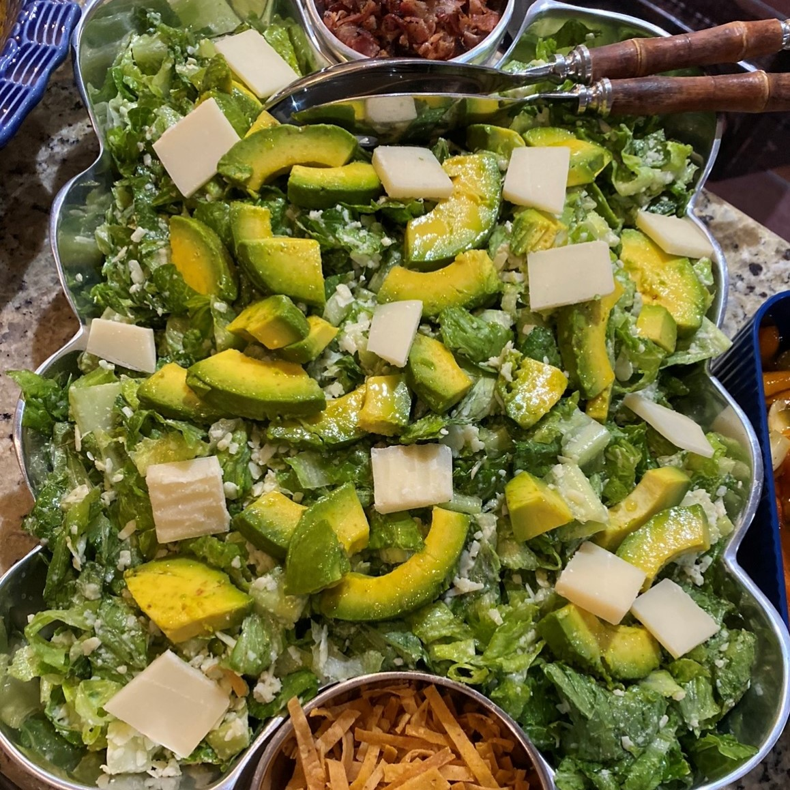

Keto Cesar Dressing
- 1 Greek Yogurt
- 1 Cup Shredded Parmesan Cheese
- 1 Tablespoon Cappers
- Juice of 2 Lemons
- Salt and Pepper to taste
- Water (optional for consistency)
Ingredients
- Place all ingredients in a blender (or Nutribullet)
- Let blend for a while until all ingredients have completely mixed together
- If too thick, add drops of water and continue to blend until you reach desired consistency
- Store in a container with lid
Preparation